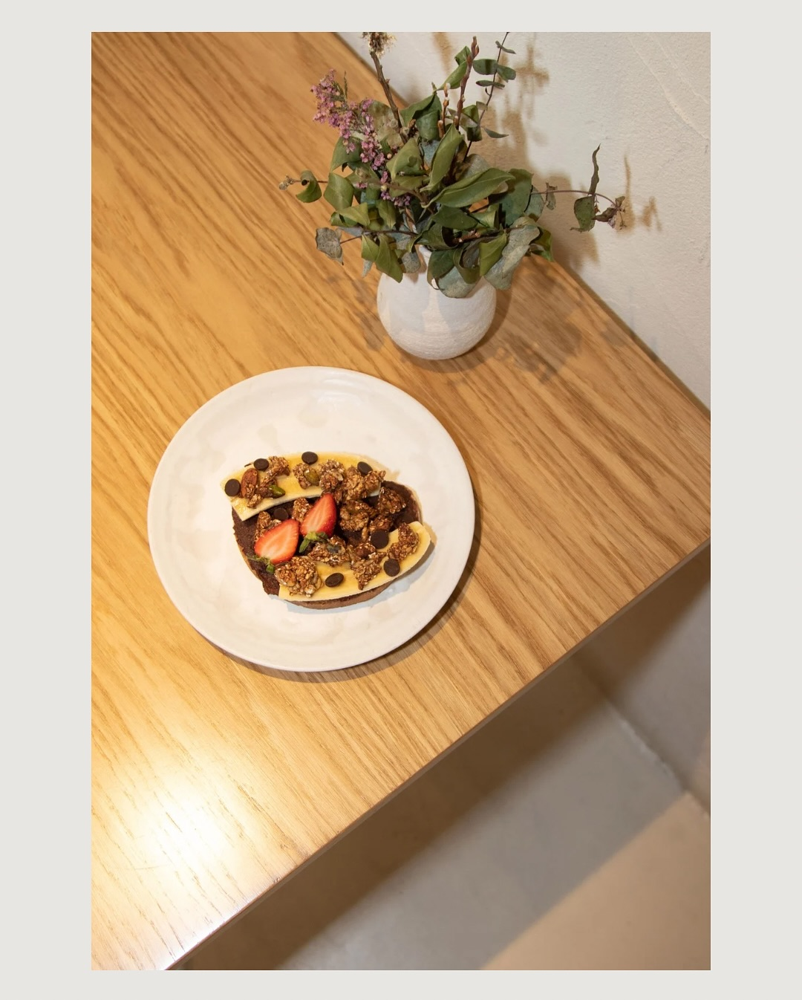

Costa
Respirar frente al agua
Una secuencia breve sobre piel, viento y gestos mínimos. Imágenes que no buscan imponerse, sino quedarse flotando.
Ver selecciónCrónicas visuales
Fragmentos de sesiones y escenas capturadas desde una mirada calma. Aquí importa tanto la imagen final como el hilo que une los pequeños gestos, los objetos y la luz.
Costa
Una secuencia breve sobre piel, viento y gestos mínimos. Imágenes que no buscan imponerse, sino quedarse flotando.
Ver selecciónMaternidad
La maternidad aparece aquí como un espacio suave. Sin poses rígidas, sin ruido, con tiempo para mirar despacio.
Reservar sesiónMarca
Las marcas también se cuentan en texturas, superficies y silencios. El encuadre ordena y deja que cada elemento respire.
Ver enfoque
Lifestyle
Una escena cotidiana puede convertirse en relato cuando la luz y el ritmo tienen una intención clara.
Abrir galeríaProceso
No hace falta producir demasiado para conseguir imágenes memorables. La clave está en observar bien, simplificar y dejar solo aquello que verdaderamente suma.
Entender qué emoción, qué mensaje o qué etapa quieres guardar en imágenes.
Elegir luz, ritmo, localización y detalle para que la sesión tenga sentido narrativo.
Reducir el ruido hasta quedarnos con una selección que se sienta sólida y atemporal.